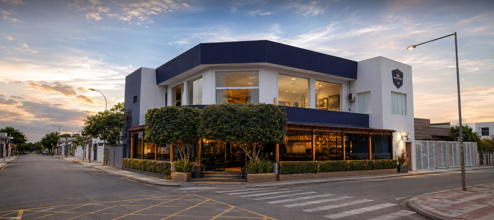

“Canto do Roxinho”
 Restaurante 2000 - Fundador
Restaurante 2000 - Fundador
Desde 1988
Restaurante, panificadora e eventos em um ambiente sofisticado, acolhedor e inesquecível.
Sobre nós
O Canto do Roxinho é referência em Manacapuru para refeições, pães, cafés e celebrações. A proposta do site é unir a identidade roxa e dourada da marca a uma experiência digital luxuosa, fácil de navegar e pronta para reservas.
“Canto do Roxinho”
Restaurante 2000 - Fundador
História
Fundado em 1988, o Canto do Roxinho nasceu com a missão de oferecer qualidade, sabor e um ambiente acolhedor para famílias e visitantes de Manacapuru. Ao longo das décadas, tornou-se referência em gastronomia, panificação e eventos, mantendo viva a tradição e o carinho em cada detalhe.
“Fundador”
Hoje
Hoje, o Canto do Roxinho continua a manter sua tradição de qualidade e serviço excepcional, expandindo-se para atender novos clientes em Manacapuru e região. Sob a direção do filho mais novo, Icaro Matos, o restaurante segue evoluindo com foco no bem-estar dos clientes, inovação e excelência no atendimento.
“Restaurante hoje”

Restaurante atualmenteFotos dos clientes